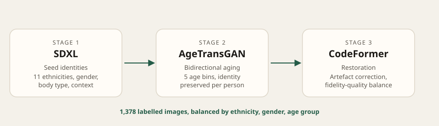

Case study · Biometric age estimation · Fairness
Can synthetic faces train a fairer age estimator?
A generative pipeline for a demographically balanced, privacy-conscious dataset for facial age estimation, evaluated for fairness, accuracy, and realism, then extended to test whether better base images could improve the results.
Age estimation from a face looks like a straightforward regression problem until you look at the data. Public benchmarks are privacy-sensitive, demographically skewed, and thin exactly where it matters most — the 16–17 boundary that separates minors from adults in age-restricted services. This project asked a practical question: if we generate the missing faces instead of collecting them, can the result support fairer age estimation — and where does it still fall short?
The problem
We have two separate issues here. First, demographic bias: UTKFace, a standard benchmark, is 45.5% Caucasian, and models trained on skewed data under-perform on the groups they're meant to protect. Second, the UK's Online Safety Act (2025) now requires platforms to run robust age checks — raising the stakes on exactly the age range where models are weakest and real training data is scarcest, for good ethical reasons.
Approach
Three deliberate stages: generate a diverse identity, age it convincingly, then restore artefacts introduced along the way.

Full implementation, prompt framework, and the modified AgeTransGAN integration are in the repo.
What the results showed
Synthetic pipelines produced visually convincing, demographically broad images — but fairness didn't come for free. FairFace classification held up well for some groups (Indian 1.00, East Asian 0.97, White 0.92) and broke down for others (Southeast Asian 0.34, Middle Eastern 0.39) — the generative model itself wasn't capturing some demographic features distinctly enough.
The more consequential failure was in age, not ethnicity. InsightFace correctly classified only 4 of the 13–17 images and 3 of the 18–20 images, with most pushed into older bins — a systematic overestimation of minors' ages, which is exactly the failure mode an age-verification system can't afford. Interestingly, human evaluators still found these younger images convincing, even though the automated model got the age wrong.
Follow-up: do off-the-shelf tools do any better?
The dissertation used SDXL to generate the base identities in Stage 1 - but SDXL is only one option. We wondered if other text-to-image models could do better at generating better base identities.
The takeaway held up, sharper this time: even state-of-the-art commercial generators carry substantial, unevenly distributed demographic bias. Convenience doesn't buy fairness for free.
What I'd do next
- Train an age estimator directly on the synthetic set to test whether fairness gains in the data translate to the downstream model.
- Replace manual filtering with automated realism/quality scoring in the generation loop.
- Extend the comparison to the ethnicities that failed hardest in both studies — Indigenous Australian, Hawaiian, Southeast Asian.
Links
- Modified AgeTransGAN repository
- Model comparisons for age verification — follow-up text-to-image evaluation
- Yang et al. (2021). AgeTransGAN for Facial Age Transformation. IEEE TIFS, 16, 2030–2042.
- Kärkkäinen & Joo (2021). FairFace: Face Attribute Dataset for Balanced Race, Gender, and Age. WACV.